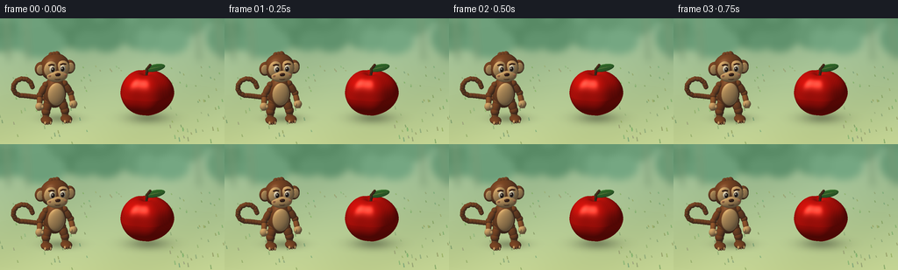
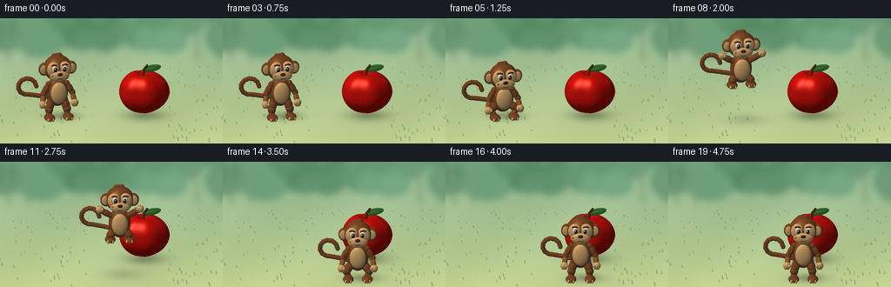
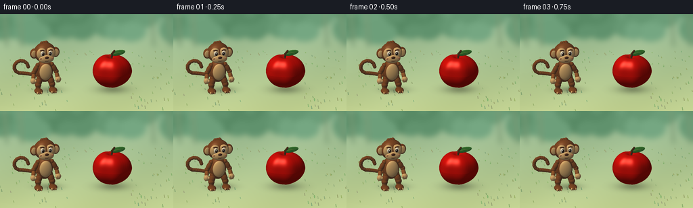
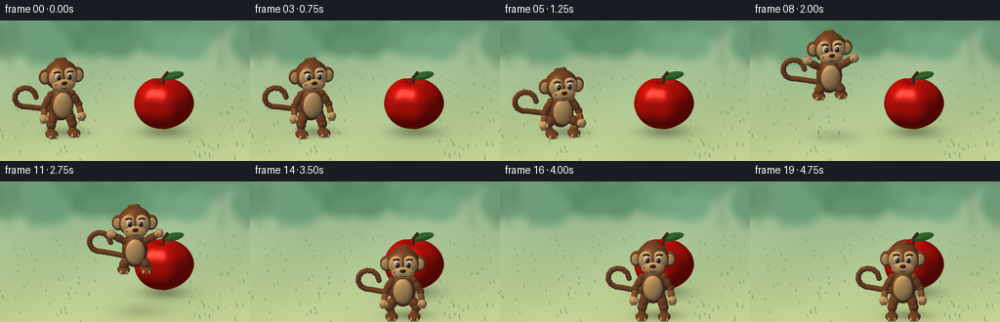
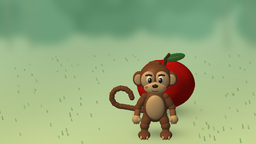

CODING AGENTS AS PIXEL WORLD MODELS
traex/GPT-6.1-Sol · dynamic_spatial_relationship_0056
点击播放 · 原生 RGB 像素
逐轮保存的候选
回放视频、检查图与代码变化。
每份候选均可单独播放。实际图片检查记录在下方工具轨迹中。
候选 01播放与检查图
点击播放 · 原生 RGB 像素


展开代码变化
--- 上一保存版本 +++ 本次保存版本 @@ -0,0 +1,252 @@ +from pathlib import Path +import math +import numpy as np +from PIL import Image, ImageDraw, ImageFilter +import artifact_io + +ROOT=Path(__file__).resolve().parent +W,H,S=256,144,3 +WW,HH=W*S,H*S +# A small purpose-built orthographic ray renderer, using mathematical solids only. +RIGHT=np.array([1.,0,0]); UP=np.array([0,.936,-.352]); D=np.array([0,-.352,-.936]) +CENTER=np.array([0.,1.05,0.]) +SPAN=5.45 +px=(np.arange(WW)+.5)/WW*SPAN-SPAN/2 +py=(.5-(np.arange(HH)+.5)/HH)*SPAN*H/W +XX,YY=np.meshgrid(px,py) +ORIGIN=CENTER+XX[...,None]*RIGHT+YY[...,None]*UP-D*8 +LIGHT=np.array([-.46,.78,.43]); LIGHT/=np.linalg.norm(LIGHT) + + +def background(): + rng=np.random.default_rng(16) + yy,xx=np.mgrid[:HH,:WW] + f=np.clip(yy/HH,0,1) + top=np.array([145,181,147]); bottom=np.array([194,210,145]) + a=top[None,None,:]*(1-f[...,None])+bottom[None,None,:]*f[...,None] + a+=4*np.sin(xx[...,None]/91+yy[...,None]/75) + im=Image.fromarray(np.uint8(np.clip(a,0,255))); d=ImageDraw.Draw(im) + # Hazy layers of a distant leafy glade. + for k in range(34): + x=float(rng.uniform(-50,WW+50)); y=float(rng.uniform(-55,85)); rx=float(rng.uniform(35,95)); ry=float(rng.uniform(30,74)) + col=tuple(int(v) for v in np.array([100,150,113])+rng.uniform(-14,18)) + d.ellipse((x-rx,y-ry,x+rx,y+ry),fill=col) + for x in (18,85,670,744): + d.line([(x,-30),(x+12,145)],fill=(122,153,116),width=11) + im=im.filter(ImageFilter.GaussianBlur(12)) + d=ImageDraw.Draw(im) + # A few tiny grassy blades, leaving the center clear. + for k in range(145): + x=float(rng.uniform(0,WW)); y=float(rng.uniform(HH*.38,HH)) + if 100*S<x<193*S and y>75*S: continue + h=float(rng.uniform(2,5))*S*(y/HH) + c=(int(rng.uniform(130,160)),int(rng.uniform(163,187)),int(rng.uniform(103,128))) + d.line([(x-2,y),(x-3,y-h),(x,y)],fill=c,width=1*S) + return np.asarray(im).astype(float)/255 + +BASE=background() + +def basis(axis): + v=np.asarray(axis,dtype=float); v/=np.linalg.norm(v) + helper=np.array([1.,0,0]) if abs(v[0])<.8 else np.array([0.,0,1.]) + x=np.cross(helper,v); x/=np.linalg.norm(x) + z=np.cross(x,v) + return np.column_stack((x,v,z)) + +class Render: + def __init__(self): + self.image=BASE.copy(); self.depth=np.full((HH,WW),100.) + self.objects=[] + def ell(self,center,radii,color,rot=None,shine=0): + self.objects.append((np.array(center),np.array(radii),np.array(color)/255.,np.eye(3) if rot is None else rot,shine)) + def limb(self,a,b,width,color): + a=np.array(a); b=np.array(b) + self.ell((a+b)/2,[width,np.linalg.norm(a-b)/2+width*.45,width],color,basis(b-a)) + self.ell(a,[width*.95]*3,color); self.ell(b,[width*.97]*3,color) + def curve(self,points,width,color): + for a,b in zip(points[:-1],points[1:]): self.limb(a,b,width,color) + def shadow(self,c,rx,rz,strength=.25): + # A soft cast shadow on the common ground plane. + rayt=-ORIGIN[...,1]/D[1] + p=ORIGIN+rayt[...,None]*D + q=((p[...,0]-c[0])/rx)**2+((p[...,2]-c[1])/rz)**2 + v=strength*np.exp(-q*1.9) + self.image*=1-v[...,None] + def render(self): + for c,r,col,B,shine in self.objects: + # Restrict intersection tests to a conservative screen-space rectangle. + ext=max(r)*1.06 + sx=((c-CENTER)@RIGHT/SPAN+.5)*WW + sy=(.5-(c-CENTER)@UP/(SPAN*H/W))*HH + rad=ext/SPAN*WW+3 + x0=max(0,int(sx-rad)); x1=min(WW,int(sx+rad)+1) + y0=max(0,int(sy-rad)); y1=min(HH,int(sy+rad)+1) + if x1<=x0 or y1<=y0:continue + o=ORIGIN[y0:y1,x0:x1] + q=(o-c)@B/r + v=(D@B)/r + aa=v@v; bb=np.sum(q*v,axis=-1); cc=np.sum(q*q,axis=-1)-1 + discr=bb*bb-aa*cc + t=(-bb-np.sqrt(np.maximum(discr,0)))/aa + mask=(discr>=0)&(t>0)&(t<self.depth[y0:y1,x0:x1]) + if not mask.any():continue + local=q+t[...,None]*v + normal=(local/r)@B.T; normal/=np.linalg.norm(normal,axis=-1,keepdims=True) + ndl=np.maximum(0,normal@LIGHT) + # Warm key light and cool ambient fill; mild rim and glossy highlights. + shade=.40+.57*ndl + rgb=col*shade[...,None] + rgb+=np.array([.025,.036,.045])*(1-ndl[...,None]) + if shine: + half=LIGHT-D; half/=np.linalg.norm(half) + spec=np.maximum(0,normal@half)**(35 if shine<.5 else 75) + rgb+=shine*spec[...,None]*np.array([1,.93,.81]) + edge=np.maximum(0,normal@(-D)) + rgb*=.91+.09*edge[...,None] + rgb=np.clip(rgb,0,1) + target=self.image[y0:y1,x0:x1]; target[mask]=rgb[mask] + self.depth[y0:y1,x0:x1][mask]=t[mask] + return np.uint8(np.clip(self.image*255,0,255)) + +BROWN=(133,76,39); LIGHTBROWN=(159,94,47); TAN=(228,179,112); DARK=(71,37,24) + +def add_apple(r): + # Blended implicit apple with shoulders and a shallow top dimple. + c=np.array([.83,.62,-.3]); R=np.array([.65,.60,.55]) + sx=((c-CENTER)@RIGHT/SPAN+.5)*WW; sy=(.5-(c-CENTER)@UP/(SPAN*H/W))*HH + rad=.88/SPAN*WW + x0=max(0,int(sx-rad));x1=min(WW,int(sx+rad));y0=max(0,int(sy-rad));y1=min(HH,int(sy+rad)) + o=ORIGIN[y0:y1,x0:x1] + def sdf(p): + q=p-c + angle=np.arctan2(q[...,2],q[...,0]) + shape=1+.036*np.cos(angle*5) + norm=np.sqrt((q[...,0]/(.65*shape))**2+(q[...,1]/.60)**2+(q[...,2]/(.55*shape))**2) + # Deepen the stem cavity and subtly narrow the bottom. + xz=q[...,0]**2+q[...,2]**2 + dimple=.11*np.exp(-xz/.026)*np.clip((q[...,1]+.2)/.5,0,1) + taper=.06*np.clip(-q[...,1]/.6,0,1) + return (norm-1)*.52+dimple+taper + # Find the local bounding sphere interval, then sphere-trace the smooth surface. + q=o-c; bb=q@D; cc=np.sum(q*q,axis=-1)-.84**2; discr=bb*bb-cc + valid=discr>=0; t=-bb-np.sqrt(np.maximum(discr,0)) + for _ in range(65): + p=o+t[...,None]*D; dist=sdf(p) + t+=np.where(valid,np.clip(dist,.000015,.12)*.82,0) + p=o+t[...,None]*D + hit=valid&(np.abs(sdf(p))<.005)&(t<r.depth[y0:y1,x0:x1]) + eps=.0005 + n=np.stack([(sdf(p+np.eye(3)[k]*eps)-sdf(p-np.eye(3)[k]*eps))/(2*eps) for k in range(3)],-1) + n/=np.maximum(np.linalg.norm(n,axis=-1,keepdims=True),1e-8) + ndl=np.maximum(0,n@LIGHT) + half=LIGHT-D; half/=np.linalg.norm(half) + spec=np.maximum(0,n@half)**45 + stripe=.025*np.sin(p[...,0]*180+p[...,1]*45)*np.sin(p[...,2]*85) + color=np.zeros_like(p); color[:]=[.78,.072,.047] + color[...,0]+=stripe+.045*np.sin(p[...,1]*14) + color*= (.40+.62*ndl)[...,None] + color+=.38*spec[...,None]*np.array([1,.78,.65]) + r.image[y0:y1,x0:x1][hit]=np.clip(color[hit],0,1) + r.depth[y0:y1,x0:x1][hit]=t[hit] + r.curve([[.83,1.11,-.3],[.85,1.26,-.30],[.92,1.36,-.29]],.035,(86,53,29)) + leafaxis=np.array([.35,.09,.025]); leafrot=basis(leafaxis) + r.ell([1.04,1.29,-.29],[.095,.25,.018],(61,131,49),leafrot,.15) + r.limb([.87,1.255,-.28],[1.20,1.335,-.27],.009,(117,155,69)) + +def monkey(r,x,z,lift,crouch,flight,phase): + # All facial features share a single yaw so the character remains consistent. + yaw=.20*(1-phase) + C=np.array([x,lift,z]); cs=math.cos(yaw);sn=math.sin(yaw) + rot=np.array([[cs,0,sn],[0,1,0],[-sn,0,cs]]) + def p(v):return C+rot@np.array(v) + def ell(c,rad,col,shine=0,rotation=None):r.ell(p(c),rad,col,rot if rotation is None else rot@rotation,shine) + def limb(a,b,w,col):r.limb(p(a),p(b),w,col) + def curve(ps,w,col):r.curve([p(v) for v in ps],w,col) + bodyy=.72-crouch*.16 + heady=1.38-crouch*.23 + # Long curling tail, with a free curled tip to the left. + points=[] + for j in range(18): + u=j/17 + if u<.50: + k=u/.5; xx=-.12-.62*k; yy=.49+.10*k + else: + k=(u-.5)/.5; ang=-math.pi/2-k*math.pi*1.48 + xx=-.75+.23*math.cos(ang); yy=.82+.23*math.sin(ang) + points.append([xx,yy-crouch*.1,-.19-.10*math.sin(u*math.pi)]) + curve(points,.060,BROWN) + ell([0,bodyy,-.03],[.28,.40,.24],BROWN,.08) + ell([0,bodyy+.018,.172],[.21,.29,.095],TAN,.06) + # Articulated rear legs, tucked during the jump. + tuck=math.sin(math.pi*flight) if 0<flight<1 else 0 + for sign in (-1,1): + hip=[sign*.17,.49-crouch*.12,0] + knee=[sign*(.235+.12*crouch),.26+.20*tuck,.06] + ankle=[sign*.24,.10+.27*tuck,.06-.16*tuck] + limb(hip,knee,.11,BROWN);limb(knee,ankle,.083,LIGHTBROWN) + ell([sign*.245,.082+.27*tuck,.18-.16*tuck],[.139,.082,.205],BROWN,.05) + for toe in range(3): + ell([sign*.245+(toe-1)*.065,.068+.27*tuck,.327-.16*tuck],[.031,.047,.059],TAN) + # Swing both arms up on takeoff, down again before landing. + swing=math.sin(math.pi*flight) if 0<flight<1 else 0 + for sign in (-1,1): + shoulder=[sign*.235,bodyy+.22,.01] + elbow=[sign*(.38+.10*swing),bodyy-.03+.49*swing,.035] + hand=[sign*(.42+.13*swing),bodyy-.27+.91*swing,.17] + limb(shoulder,elbow,.085,BROWN);limb(elbow,hand,.070,LIGHTBROWN) + ell(hand,[.100,.103,.082],TAN) + for digit in range(3): + hh=np.array(hand)+np.array([(digit-1)*.045,.056 if swing>.3 else -.045,.017]) + ell(hh,[.024,.065,.025],TAN) + ell(np.array(hand)+np.array([-sign*.065,.006,.06]),[.034,.047,.037],TAN) + # Big head, round ears with recessed inner lobes, heart-shaped facial mask. + ell([0,heady,0],[.365,.345,.29],BROWN,.12) + for sign in (-1,1): + ell([sign*.355,heady-.015,.005],[.145,.178,.085],BROWN) + ell([sign*.372,heady-.01,.073],[.095,.125,.027],TAN) + ell([sign*.145,heady+.035,.225],[.174,.208,.084],TAN,.05) + ell([0,heady-.136,.264],[.255,.151,.095],TAN,.07) + # Forehead curl / three small fur tufts. + for k in range(3): + ell([-.085+k*.072,heady+.294+k*.008,-.015],[.055,.095,.075],BROWN,rotation=basis([-.23,1,-.1])) + for sign in (-1,1): + ell([sign*.133,heady+.067,.298],[.069,.086,.035],(255,240,207),.10) + ell([sign*.120,heady+.062,.328],[.044,.062,.027],(47,28,19),.55) + ell([sign*.119-.013,heady+.087,.350],[.016,.021,.008],(255,254,235),.10) + curve([[sign*.205,heady+.169,.285],[sign*.141,heady+.189,.30],[sign*.084,heady+.168,.295]],.019,DARK) + ell([0,heady-.066,.354],[.068,.043,.032],DARK,.25) + for sign in (-1,1):ell([sign*.028,heady-.072,.379],[.011,.009,.005],(31,21,17)) + smile=[] + for j in range(12): + u=-1+2*j/11 + smile.append([.12*u,heady-.191+.041*u*u,.347-.015*u*u]) + curve(smile,.011,DARK) + ell([-.19,heady-.10,.327],[.044,.030,.008],(216,140,92)) + ell([.19,heady-.10,.327],[.044,.030,.008],(216,140,92)) + + +def generate(): + frames=[] + for f in range(20): + if f<4: + x,z,lift,crouch,u,phase=-1.39,-.10,0.,0.,0.,0. + elif f<6: + x,z,lift,crouch,u,phase=-1.39,-.10,0.,(.60 if f==4 else 1),0.,0. + elif f<=13: + u=(f-6)/7; ease=u*u*(3-2*u) + x=-1.39+(2.00)*ease; z=-.10+1.36*ease + lift=.91*4*u*(1-u); crouch=0.;phase=ease + else: + x,z,lift,u,phase=.61,1.26,0.,1.,1. + crouch=.48 if f==14 else (.12 if f==15 else 0.) + r=Render() + r.shadow((.87,-.26),.70,.57,.30) + r.shadow((x+.13, z-.12),.58+lift*.20,.44+lift*.17,.28/(1+lift*1.5)) + # Fixed apple; the changing z-coordinate places the landing monkey in front. + add_apple(r) + monkey(r,x,z,lift,crouch,u,phase) + im=Image.fromarray(r.render()).resize((W,H),Image.Resampling.LANCZOS) + frames.append(np.asarray(im)) + artifact_io.save(np.stack(frames),ROOT) + +if __name__=='__main__': generate()
候选 02播放与检查图
点击播放 · 原生 RGB 像素


展开代码变化
--- 上一保存版本 +++ 本次保存版本 @@ -10,7 +10,7 @@ # A small purpose-built orthographic ray renderer, using mathematical solids only. RIGHT=np.array([1.,0,0]); UP=np.array([0,.936,-.352]); D=np.array([0,-.352,-.936]) CENTER=np.array([0.,1.05,0.]) -SPAN=5.45 +SPAN=5.75 px=(np.arange(WW)+.5)/WW*SPAN-SPAN/2 py=(.5-(np.arange(HH)+.5)/HH)*SPAN*H/W XX,YY=np.meshgrid(px,py)
可观测工具轨迹
实际执行的命令与返回图片。
命令 1exit 0
/bin/bash -lc 'ls -la && cat prompt.txt && cat GENERATION_RULES.md && cat task_spec.json'
命令 2exit 0
/bin/bash -lc 'cat artifact_io.py'
命令 3exit 0
/bin/bash -lc "python - <<'PY'
import numpy, PIL
print('numpy',numpy.__version__,'PIL',PIL.__version__)
PY"命令 4exit 0
/bin/bash -lc "cat > generate.py <<'PY'
from pathlib import Path
import math
import numpy as np
from PIL import Image, ImageDraw, ImageFilter
import artifact_io
ROOT=Path(__file__).resolve().parent
W,H,S=256,144,3
WW,HH=W*S,H*S
# A small purpose-built orthographic ray renderer, using mathematical solids only.
RIGHT=np.array([1.,0,0]); UP=np.array([0,.936,-.352]); D=np.array([0,-.352,-.936])
CENTER=np.array([0.,1.05,0.])
SPAN=5.45
px=(np.arange(WW)+.5)/WW*SPAN-SPAN/2
py=(.5-(np.arange(HH)+.5)/HH)*SPAN*H/W
XX,YY=np.meshgrid(px,py)
ORIGIN=CENTER+XX[...,None]*RIGHT+YY[...,None]*UP-D*8
LIGHT=np.array([-.46,.78,.43]); LIGHT/=np.linalg.norm(LIGHT)
def background():
rng=np.random.default_rng(16)
yy,xx=np.mgrid[:HH,:WW]
f=np.clip(yy/HH,0,1)
top=np.array([145,181,147]); bottom=np.array([194,210,145])
a=top[None,None,:]*(1-f[...,None])+bottom[None,None,:]*f[...,None]
a+=4*np.sin(xx[...,None]/91+yy[...,None]/75)
im=Image.fromarray(np.uint8(np.clip(a,0,255))); d=ImageDraw.Draw(im)
# Hazy layers of a distant leafy glade.
for k in range(34):
x=float(rng.uniform(-50,WW+50)); y=float(rng.uniform(-55,85)); rx=float(rng.uniform(35,95)); ry=float(rng.uniform(30,74))
col=tuple(int(v) for v in np.array([100,150,113])+rng.uniform(-14,18))
d.ellipse((x-rx,y-ry,x+rx,y+ry),fill=col)
for x in (18,85,670,744):
d.line([(x,-30),(x+12,145)],fill=(122,153,116),width=11)
im=im.filter(ImageFilter.GaussianBlur(12))
d=ImageDraw.Draw(im)
# A few tiny grassy blades, leaving the center clear.
for k in range(145):
x=float(rng.uniform(0,WW)); y=float(rng.uniform(HH*.38,HH))
if 100*S<x<193*S and y>75*S: continue
h=float(rng.uniform(2,5))*S*(y/HH)
c=(int(rng.uniform(130,160)),int(rng.uniform(163,187)),int(rng.uniform(103,128)))
d.line([(x-2,y),(x-3,y-h),(x,y)],fill=c,width=1*S)
return np.asarray(im).astype(float)/255
BASE=background()
def basis(axis):
v=np.asarray(axis,dtype=float); v/=np.linalg.norm(v)
helper=np.array([1.,0,0]) if abs(v[0])<.8 else np.array([0.,0,1.])
x=np.cross(helper,v); x/=np.linalg.norm(x)
z=np.cross(x,v)
return np.column_stack((x,v,z))
class Render:
def __init__(self):
self.image=BASE.copy(); self.depth=np.full((HH,WW),100.)
self.objects=[]
def ell(self,center,radii,color,rot=None,shine=0):
self.objects.append((np.array(center),np.array(radii),np.array(color)/255.,np.eye(3) if rot is None else rot,shine))
def limb(self,a,b,width,color):
a=np.array(a); b=np.array(b)
self.ell((a+b)/2,[width,np.linalg.norm(a-b)/2+width*.45,width],color,basis(b-a))
self.ell(a,[width*.95]*3,color); self.ell(b,[width*.97]*3,color)
def curve(self,points,width,color):
for a,b in zip(points[:-1],points[1:]): self.limb(a,b,width,color)
def shadow(self,c,rx,rz,strength=.25):
# A soft cast shadow on the common ground plane.
rayt=-ORIGIN[...,1]/D[1]
p=ORIGIN+rayt[...,None]*D
q=((p[...,0]-c[0])/rx)**2+((p[...,2]-c[1])/rz)**2
v=strength*np.exp(-q*1.9)
self.image*=1-v[...,None]
def render(self):
for c,r,col,B,shine in self.objects:
# Restrict intersection tests to a conservative screen-space rectangle.
ext=max(r)*1.06
sx=((c-CENTER)@RIGHT/SPAN+.5)*WW
sy=(.5-(c-CENTER)@UP/(SPAN*H/W))*HH
rad=ext/SPAN*WW+3
x0=max(0,int(sx-rad)); x1=min(WW,int(sx+rad)+1)
y0=max(0,int(sy-rad)); y1=min(HH,int(sy+rad)+1)
if x1<=x0 or y1<=y0:continue
o=ORIGIN[y0:y1,x0:x1]
q=(o-c)@B/r
v=(D@B)/r
aa=v@v; bb=np.sum(q*v,axis=-1); cc=np.sum(q*q,axis=-1)-1
discr=bb*bb-aa*cc
t=(-bb-np.sqrt(np.maximum(discr,0)))/aa
mask=(discr>=0)&(t>0)&(t<self.depth[y0:y1,x0:x1])
if not mask.any():continue
local=q+t[...,None]*v
normal=(local/r)@B.T; normal/=np.linalg.norm(normal,axis=-1,keepdims=True)
ndl=np.maximum(0,normal@LIGHT)
# Warm key light and cool ambient fill; mild rim and glossy highlights.
shade=.40+.57*ndl
rgb=col*shade[...,None]
rgb+=np.array([.025,.036,.045])*(1-ndl[...,None])
if shine:
half=LIGHT-D; half/=np.linalg.norm(half)
spec=np.maximum(0,normal@half)**(35 if shine<.5 else 75)
rgb+=shine*spec[...,None]*np.array([1,.93,.81])
edge=np.maximum(0,normal@(-D))
rgb*=.91+.09*edge[...,None]
rgb=np.clip(rgb,0,1)
target=self.image[y0:y1,x0:x1]; target[mask]=rgb[mask]
self.depth[y0:y1,x0:x1][mask]=t[mask]
return np.uint8(np.clip(self.image*255,0,255))
BROWN=(133,76,39); LIGHTBROWN=(159,94,47); TAN=(228,179,112); DARK=(71,37,24)
def add_apple(r):
# Blended implicit apple with shoulders and a shallow top dimple.
c=np.array([.83,.62,-.3]); R=np.array([.65,.60,.55])
sx=((c-CENTER)@RIGHT/SPAN+.5)*WW; sy=(.5-(c-CENTER)@UP/(SPAN*H/W))*HH
rad=.88/SPAN*WW
x0=max(0,int(sx-rad));x1=min(WW,int(sx+rad));y0=max(0,int(sy-rad));y1=min(HH,int(sy+rad))
o=ORIGIN[y0:y1,x0:x1]
def sdf(p):
q=p-c
angle=np.arctan2(q[...,2],q[...,0])
shape=1+.036*np.cos(angle*5)
norm=np.sqrt((q[...,0]/(.65*shape))**2+(q[...,1]/.60)**2+(q[...,2]/(.55*shape))**2)
# Deepen the stem cavity and subtly narrow the bottom.
xz=q[...,0]**2+q[...,2]**2
dimple=.11*np.exp(-xz/.026)*np.clip((q[...,1]+.2)/.5,0,1)
taper=.06*np.clip(-q[...,1]/.6,0,1)
return (norm-1)*.52+dimple+taper
# Find the local bounding sphere interval, then sphere-trace the smooth surface.
q=o-c; bb=q@D; cc=np.sum(q*q,axis=-1)-.84**2; discr=bb*bb-cc
valid=discr>=0; t=-bb-np.sqrt(np.maximum(discr,0))
for _ in range(65):
p=o+t[...,None]*D; dist=sdf(p)
t+=np.where(valid,np.clip(dist,.000015,.12)*.82,0)
p=o+t[...,None]*D
hit=valid&(np.abs(sdf(p))<.005)&(t<r.depth[y0:y1,x0:x1])
eps=.0005
n=np.stack([(sdf(p+np.eye(3)[k]*eps)-sdf(p-np.eye(3)[k]*eps))/(2*eps) for k in range(3)],-1)
n/=np.maximum(np.linalg.norm(n,axis=-1,keepdims=True),1e-8)
ndl=np.maximum(0,n@LIGHT)
half=LIGHT-D; half/=np.linalg.norm(half)
spec=np.maximum(0,n@half)**45
stripe=.025*np.sin(p[...,0]*180+p[...,1]*45)*np.sin(p[...,2]*85)
color=np.zeros_like(p); color[:]=[.78,.072,.047]
color[...,0]+=stripe+.045*np.sin(p[...,1]*14)
color*= (.40+.62*ndl)[...,None]
color+=.38*spec[...,None]*np.array([1,.78,.65])
r.image[y0:y1,x0:x1][hit]=np.clip(color[hit],0,1)
r.depth[y0:y1,x0:x1][hit]=t[hit]
r.curve([[.83,1.11,-.3],[.85,1.26,-.30],[.92,1.36,-.29]],.035,(86,53,29))
leafaxis=np.array([.35,.09,.025]); leafrot=basis(leafaxis)
r.ell([1.04,1.29,-.29],[.095,.25,.018],(61,131,49),leafrot,.15)
r.limb([.87,1.255,-.28],[1.20,1.335,-.27],.009,(117,155,69))
def monkey(r,x,z,lift,crouch,flight,phase):
# All facial features share a single yaw so the character remains consistent.
yaw=.20*(1-phase)
C=np.array([x,lift,z]); cs=math.cos(yaw);sn=math.sin(yaw)
rot=np.array([[cs,0,sn],[0,1,0],[-sn,0,cs]])
def p(v):return C+rot@np.array(v)
def ell(c,rad,col,shine=0,rotation=None):r.ell(p(c),rad,col,rot if rotation is None else rot@rotation,shine)
def limb(a,b,w,col):r.limb(p(a),p(b),w,col)
def curve(ps,w,col):r.curve([p(v) for v in ps],w,col)
bodyy=.72-crouch*.16
heady=1.38-crouch*.23
# Long curling tail, with a free curled tip to the left.
points=[]
for j in range(18):
u=j/17
if u<.50:
k=u/.5; xx=-.12-.62*k; yy=.49+.10*k
else:
k=(u-.5)/.5; ang=-math.pi/2-k*math.pi*1.48
xx=-.75+.23*math.cos(ang); yy=.82+.23*math.sin(ang)
points.append([xx,yy-crouch*.1,-.19-.10*math.sin(u*math.pi)])
curve(points,.060,BROWN)
ell([0,bodyy,-.03],[.28,.40,.24],BROWN,.08)
ell([0,bodyy+.018,.172],[.21,.29,.095],TAN,.06)
# Articulated rear legs, tucked during the jump.
tuck=math.sin(math.pi*flight) if 0<flight<1 else 0
for sign in (-1,1):
hip=[sign*.17,.49-crouch*.12,0]
knee=[sign*(.235+.12*crouch),.26+.20*tuck,.06]
ankle=[sign*.24,.10+.27*tuck,.06-.16*tuck]
limb(hip,knee,.11,BROWN);limb(knee,ankle,.083,LIGHTBROWN)
ell([sign*.245,.082+.27*tuck,.18-.16*tuck],[.139,.082,.205],BROWN,.05)
for toe in range(3):
ell([sign*.245+(toe-1)*.065,.068+.27*tuck,.327-.16*tuck],[.031,.047,.059],TAN)
# Swing both arms up on takeoff, down again before landing.
swing=math.sin(math.pi*flight) if 0<flight<1 else 0
for sign in (-1,1):
shoulder=[sign*.235,bodyy+.22,.01]
elbow=[sign*(.38+.10*swing),bodyy-.03+.49*swing,.035]
hand=[sign*(.42+.13*swing),bodyy-.27+.91*swing,.17]
limb(shoulder,elbow,.085,BROWN);limb(elbow,hand,.070,LIGHTBROWN)
ell(hand,[.100,.103,.082],TAN)
for digit in range(3):
hh=np.array(hand)+np.array([(digit-1)*.045,.056 if swing>.3 else -.045,.017])
ell(hh,[.024,.065,.025],TAN)
ell(np.array(hand)+np.array([-sign*.065,.006,.06]),[.034,.047,.037],TAN)
# Big head, round ears with recessed inner lobes, heart-shaped facial mask.
ell([0,heady,0],[.365,.345,.29],BROWN,.12)
for sign in (-1,1):
ell([sign*.355,heady-.015,.005],[.145,.178,.085],BROWN)
ell([sign*.372,heady-.01,.073],[.095,.125,.027],TAN)
ell([sign*.145,heady+.035,.225],[.174,.208,.084],TAN,.05)
ell([0,heady-.136,.264],[.255,.151,.095],TAN,.07)
# Forehead curl / three small fur tufts.
for k in range(3):
ell([-.085+k*.072,heady+.294+k*.008,-.015],[.055,.095,.075],BROWN,rotation=basis([-.23,1,-.1]))
for sign in (-1,1):
ell([sign*.133,heady+.067,.298],[.069,.086,.035],(255,240,207),.10)
ell([sign*.120,heady+.062,.328],[.044,.062,.027],(47,28,19),.55)
ell([sign*.119-.013,heady+.087,.350],[.016,.021,.008],(255,254,235),.10)
curve([[sign*.205,heady+.169,.285],[sign*.141,heady+.189,.30],[sign*.084,heady+.168,.295]],.019,DARK)
ell([0,heady-.066,.354],[.068,.043,.032],DARK,.25)
for sign in (-1,1):ell([sign*.028,heady-.072,.379],[.011,.009,.005],(31,21,17))
smile=[]
for j in range(12):
u=-1+2*j/11
smile.append([.12*u,heady-.191+.041*u*u,.347-.015*u*u])
curve(smile,.011,DARK)
ell([-.19,heady-.10,.327],[.044,.030,.008],(216,140,92))
ell([.19,heady-.10,.327],[.044,.030,.008],(216,140,92))
def generate():
frames=[]
for f in range(20):
if f<4:
x,z,lift,crouch,u,phase=-1.39,-.10,0.,0.,0.,0.
elif f<6:
x,z,lift,crouch,u,phase=-1.39,-.10,0.,(.60 if f==4 else 1),0.,0.
elif f<=13:
u=(f-6)/7; ease=u*u*(3-2*u)
x=-1.39+(2.00)*ease; z=-.10+1.36*ease
lift=.91*4*u*(1-u); crouch=0.;phase=ease
else:
x,z,lift,u,phase=.61,1.26,0.,1.,1.
crouch=.48 if f==14 else (.12 if f==15 else 0.)
r=Render()
r.shadow((.87,-.26),.70,.57,.30)
r.shadow((x+.13, z-.12),.58+lift*.20,.44+lift*.17,.28/(1+lift*1.5))
# Fixed apple; the changing z-coordinate places the landing monkey in front.
add_apple(r)
monkey(r,x,z,lift,crouch,u,phase)
im=Image.fromarray(r.render()).resize((W,H),Image.Resampling.LANCZOS)
frames.append(np.asarray(im))
artifact_io.save(np.stack(frames),ROOT)
if __name__=='__main__': generate()
PY
python generate.py"命令 5exit 0
/bin/bash -lc "python - <<'PY'
p='generate.py'
s=open(p).read().replace('SPAN=5.45','SPAN=5.75')
open(p,'w').write(s)
PY
python generate.py"命令 6exit 0
/bin/bash -lc "python - <<'PY'
import numpy as np
from pathlib import Path
from PIL import Image
p=Path('.')
a=np.load('pixels.npz')['pixels']
assert a.shape==(144,256,20)
assert len(list(Path('frames').glob('*.png')))==20
assert Image.open('frames/19.png').mode=='RGB'
assert Path('index.html').is_file()
print('Verified: 20 RGB frames, 256x144, 4 fps; pixels.npz and index.html saved.')
PY"视觉工具实际返回图片 1

视觉工具实际返回图片 2

保存候选 2 份；完成命令 6 次；可验证图片返回 2 张。原始 API 响应与完整日志保留在本地。